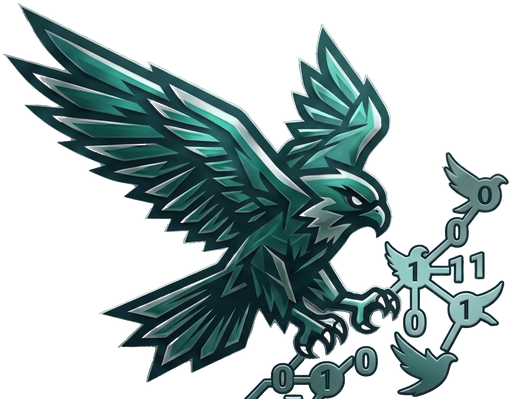
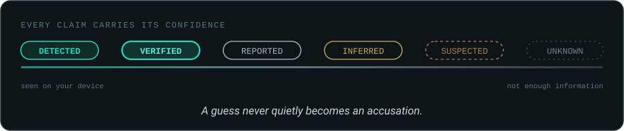

Open-source counter-surveillance for the networks you control.
Map your exposure. Verify your route. Gate sensitive actions — with every decision signed into an audit log that never leaves your machine.
The scenario
A laptop joins an untrusted network. An application asks to perform a sensitive upload. The trusted route is gone — so the action is held, with a recorded reason. When the route returns and is verified, the action is allowed. Five signed events, replayable on your machine today.

The full coffee-shop scenario runs locally and is entirely simulated — no VPN account, no real data, no cloud dependency.
What it does
Map your devices, routes, mesh peers, and the metadata an outside observer could plausibly collect. An inventory of your own footprint — not a threat feed.
Label every finding by evidence status: detected, verified, reported, inferred, suspected, unknown. A guess never quietly becomes an accusation.
Deterministic, operator-defined policy allows, holds, or blocks sensitive actions. Same inputs, same decision, every time. No model guessing at risk.
Signed, hash-chained decisions with plain-language explanations, expirations, and rollback results — stored locally, never in a vendor's cloud.
Evidence model
Something directly observed is not the same as something a third party reported, and neither is the same as an inference. AntiFl0ck keeps those categories separate on purpose. An AI may explain a finding; it never makes the allow-or-block decision.

Quickstart
Needs Docker and Node 24+. Nothing else — no account, no real data.
# clone and start the stack git clone https://github.com/AetherAI3/AntiFlock cd AntiFlock make dev # run the simulated coffee-shop scenario make lab # Third-Eye dashboard http://127.0.0.1:4173 — user: operator
On Windows without make: npm run dev / npm run lab. Token is in .antiflock/dev.env. Full guide in the operator runbook.
Honest status
The local simulated slice is complete and sits behind a ten-gate release check. The real-world pieces are later milestones — they are not claimed until proven.
Hard boundaries: release status · threat model · open decisions
Contribute
Help build the defensive layer surveillance technology never gave ordinary people. Scoped issues are labelled good first issue and help wanted.
Linux, macOS, Windows, and Android collectors; provider adapters.
Topology, exposure maps, and audit timelines in React.
Deterministic rules and secure-action integrations.
Metadata models, ALPR research, threat modeling.
Signing, storage, privilege separation, testing.
Read this first
Pre-release defensive software. AntiFl0ck does not provide anonymity, does not prove that surveillance is occurring, and does not replace a VPN. It does not detect or locate ALPR cameras, scan for nearby hardware, or interfere with anyone's surveillance infrastructure — it is a defensive layer for the networks you already control.
AntiFl0ck is an independent open-source project. It is not affiliated with or endorsed by Flock Safety. Report vulnerabilities privately via SECURITY.md, never a public issue.